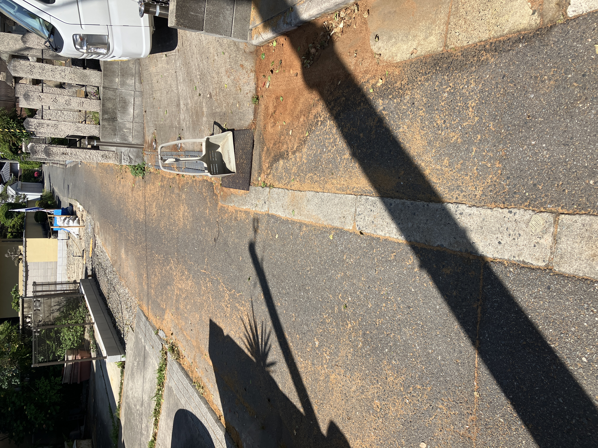
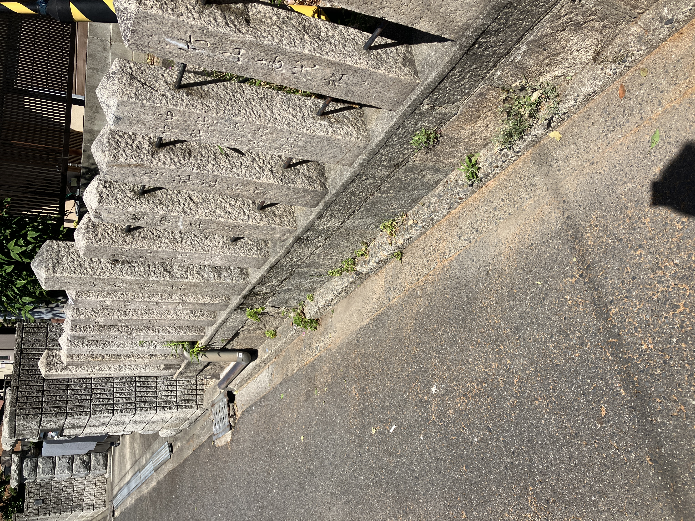
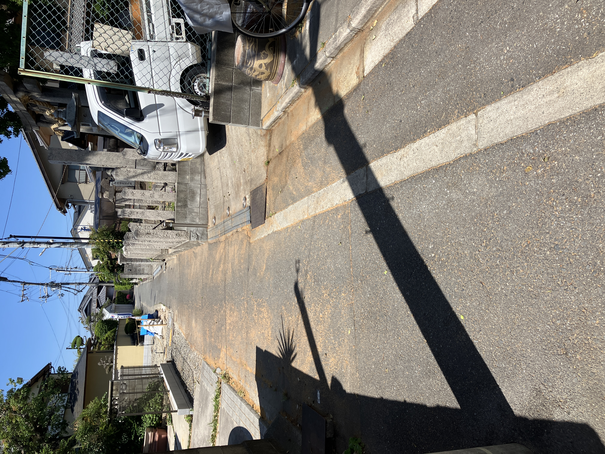
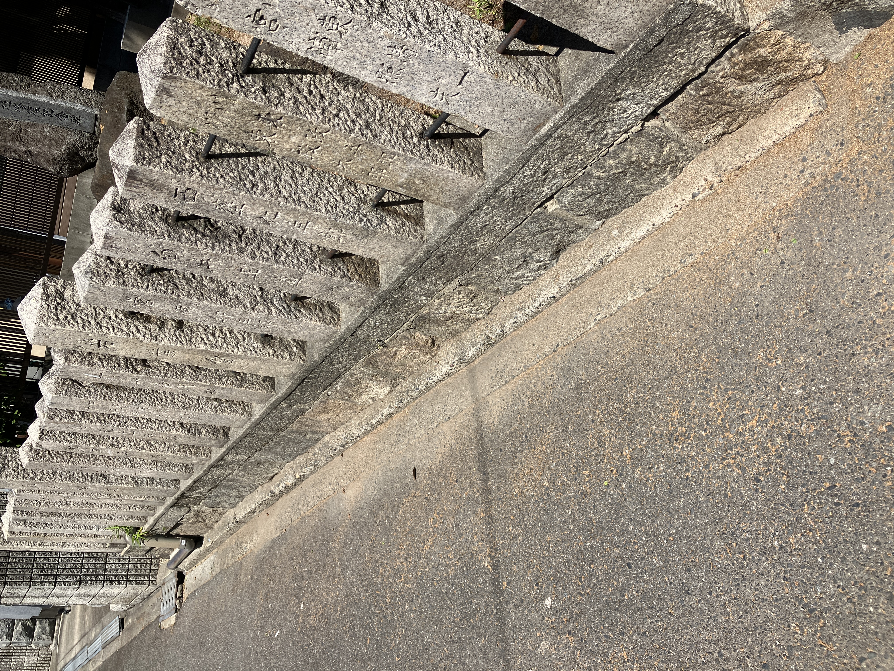

最近は落ち葉が少なくなってきた代わりに、今度は細かい花が大量に落ちてくる季節になりました。


石柱の隙間には雑草もしっかり根を張っていたので、まずは草取りから。石と石の間の狭い部分に指を入れながら、一本一本丁寧に抜いていきます。根がしっかりしているものもあり、思った以上に時間がかかりました。
草取りが終わると、今度は花びらの問題です。石柱の隙間や溝のコンクリート部分に、細かい花びらがびっしりと入り込んでいます。落ち葉のようにまとめて掃けるわけではなく、小さな粒がひとつひとつ詰まっているので、なかなか完全にきれいにならない。


道路にも花びらがびっしり。ちりとりで集めながら少しずつ回収していきます。完全にきれいにするのは難しいですが、目立つ部分をしっかり清掃しました。
季節ごとに「敵」が変わるのが地域清掃の面白いところでもあり、大変なところでもあります。落ち葉が終わったと思ったら今度は花…次は何が来るのか、少し身構えながら日々まわっています😅